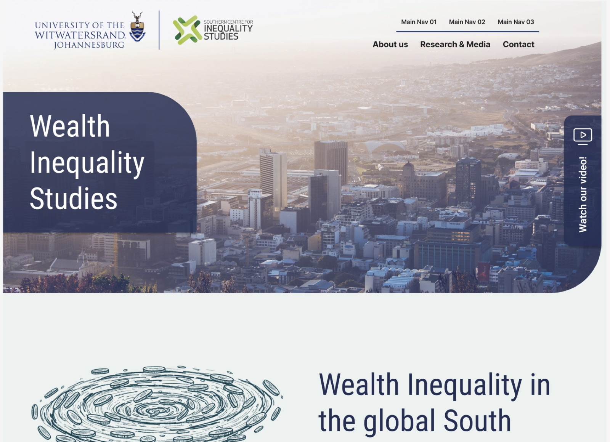
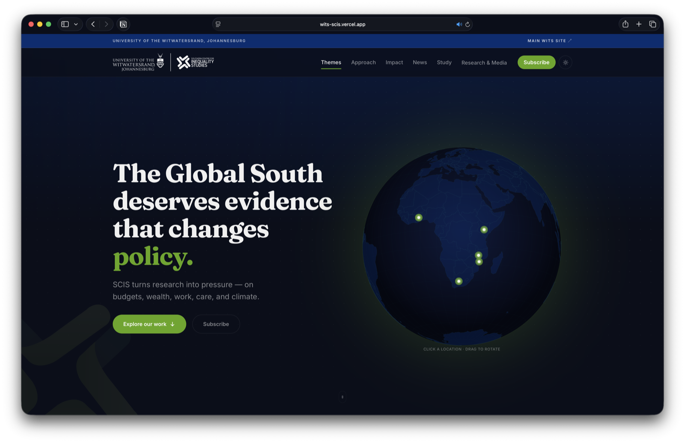

<!doctype html>
<html lang="en" data-theme="dark">
<head>
  <meta charset="utf-8" />
  <meta name="viewport" content="width=device-width, initial-scale=1, viewport-fit=cover" />
  <title>SCIS @ Wits — Vanta Labs Case Study</title>
  <meta name="description" content="How we gave the Southern Centre for Inequality Studies its own voice — a standalone site carved out from a 100-year university." />
  <link rel="preconnect" href="https://fonts.googleapis.com" />
  <link rel="preconnect" href="https://fonts.gstatic.com" crossorigin />
  <link href="https://fonts.googleapis.com/css2?family=Geist:wght@300;400;500;600;700&family=Geist+Mono:wght@400;500;600&family=Instrument+Serif:ital@0;1&display=swap" rel="stylesheet" />
  <link rel="stylesheet" href="../styles.css" />
  <link rel="stylesheet" href="case-study.css" />
  <style>
    :root { --accent: #9ee84d; --accent-ink: #9ee84d; }
    [data-theme="dark"] .cs-stat-v { color: var(--accent); }
  </style>
</head>
<body>
  <div id="root"></div>
  <script src="https://unpkg.com/react@18.3.1/umd/react.development.js" integrity="sha384-hD6/rw4ppMLGNu3tX5cjIb+uRZ7UkRJ6BPkLpg4hAu/6onKUg4lLsHAs9EBPT82L" crossorigin="anonymous"></script>
  <script src="https://unpkg.com/react-dom@18.3.1/umd/react-dom.development.js" integrity="sha384-u6aeetuaXnQ38mYT8rp6sbXaQe3NL9t+IBXmnYxwkUI2Hw4bsp2Wvmx4yRQF1uAm" crossorigin="anonymous"></script>
  <script src="https://unpkg.com/@babel/standalone@7.29.0/babel.min.js" integrity="sha384-m08KidiNqLdpJqLq95G/LEi8Qvjl/xUYll3QILypMoQ65QorJ9Lvtp2RXYGBFj1y" crossorigin="anonymous"></script>
  <script type="text/babel" src="shared.jsx"></script>
  <script type="text/babel">
    const ACCENT = '#9ee84d';
    const { useState, useEffect, useRef } = React;

    const NEXT = { name: 'Vanta Labs (this site)', cat: 'Self-published · Brand & marketing', href: 'Vanta Labs.html' };

    function Page() {
      useEffect(() => {
        document.documentElement.style.setProperty('--accent', ACCENT);
      }, []);
      return (
        <>
          <CaseNav accent={ACCENT} />
          <main>
            <section className="cs-hero">
              <div className="container">
                <Reveal>
                  <a href="../index.html#work" className="cs-back">
                    <svg width="14" height="14" viewBox="0 0 14 14" fill="none">
                      <path d="M9 11L5 7l4-4" stroke="currentColor" strokeWidth="1.4" strokeLinecap="round" strokeLinejoin="round" />
                    </svg>
                    All work
                  </a>
                </Reveal>
                <Reveal delay={40}>
                  <div className="cs-chips">
                    <span className="cs-chip"><span className="cs-chip-dot" style={{ background:ACCENT, color:ACCENT }} />Client work</span>
                    <span className="cs-chip">2025 – 2026</span>
                    <span className="cs-chip">Research & Academic</span>
                    <span className="cs-chip" style={{ borderColor:`${ACCENT}50`, color:ACCENT }}>Launching mid-2026</span>
                  </div>
                </Reveal>
                <div className="cs-hero-grid">
                  <div>
                    <Reveal delay={80}>
                      <h1 className="display">
                        Carving out space for research that{' '}
                        <span className="display-em">changes policy.</span>
                      </h1>
                    </Reveal>
                    <Reveal delay={160}>
                      <p className="lede">
                        The Southern Centre for Inequality Studies at Wits University had
                        spent seven years producing research that matters — on budgets, wealth,
                        labour, care, and climate. But inside the university's parent site,
                        that work was invisible. They needed a home of their own.
                      </p>
                    </Reveal>
                    <Reveal delay={220}>
                      <div className="cs-services">
                        {['IA & UX','UI & motion','Web build','CMS'].map(s => (
                          <span key={s} className="tag">{s}</span>
                        ))}
                      </div>
                    </Reveal>
                  </div>
                  <Reveal delay={120} className="cs-hero-art">
                    <DeviceShot
                      desktop="../assets/work/scis-desktop-light.jpg"
                      mobile="../assets/work/scis-mobile.png"
                      url="wits-scis.vercel.app"
                      bg1="#08111e" bg2="#0e1a30"
                    />
                  </Reveal>
                </div>
              </div>
            </section>

            <section className="cs-section">
              <div className="container">
                <Eyebrow num="01">The brief</Eyebrow>
                <div className="cs-2col">
                  <div>
                    <Reveal>
                      <h2 className="h2">A clear vision the client could feel — that the first designs hadn't captured.</h2>
                    </Reveal>
                    <ol className="cs-steps">
                      {[
                        { t: 'The starting point', b: 'SCIS already had a standalone site in motion — and a set of designs on the table. But the work didn\'t land. It read as a generic university microsite where it needed to feel urgent, activist, and alive to the calibre of the research.' },
                        { t: 'Why we were brought in', b: 'Not to start from zero, but to realise the vision the client already held in their head: a centre that reads as rigorous and activist at once, and a site that argues. We re-grounded the design in that intent.' },
                        { t: 'The complexity', b: 'SCIS produces across six interconnected research streams, nine partner countries, and seven years of publication history. Making that navigable — and meaningful — required real IA thinking, not just a fresh coat of paint.' },
                      ].map((s, i) => (
                        <Reveal key={i} delay={i * 70} as="li" className="cs-step">
                          <span className="cs-step-n mono">0{i + 1}</span>
                          <div>
                            <h3 className="cs-step-t">{s.t}</h3>
                            <p className="cs-step-b">{s.b}</p>
                          </div>
                        </Reveal>
                      ))}
                    </ol>
                  </div>
                  <Reveal delay={120}>
                    <p className="lede">
                      Inequality research sits at the intersection of academic rigour and
                      political urgency. The centre's funders include the Bill & Melinda Gates
                      Foundation, Ford Foundation, and GIZ. Its research shapes national budget
                      decisions. It deserved a digital home that matched that weight — and the
                      designs in hand simply didn't.
                    </p>
                    <p className="lede" style={{ marginTop: 16 }}>
                      So we ran the brief backwards from the vision the client kept describing.
                      We re-mapped seven years of output across the six research streams —
                      Budgets, Wealth, Work, Care, and Climate — and rebuilt the design language
                      around it: a system flexible enough to serve both academics looking for
                      citations and policymakers looking for arguments, with a tone that finally
                      felt like the centre itself.
                    </p>
                    <div style={{ marginTop: 32, padding: '24px 26px', background: 'var(--bg-2)', border: '1px solid var(--line)', borderLeft: `3px solid ${ACCENT}`, borderRadius: '0 8px 8px 0' }}>
                      <p style={{ margin: 0, fontSize: 15, fontStyle: 'italic', fontFamily: "'Instrument Serif', serif", color: 'var(--fg-2)', lineHeight: 1.6 }}>
                        "We could picture exactly what this needed to feel like — the earlier
                        designs just weren't it. We needed someone to take that picture seriously
                        and actually build it."
                      </p>
                      <div className="mono dim" style={{ marginTop: 10, fontSize: 11 }}>— SCIS brief, Feb 2026</div>
                    </div>
                  </Reveal>
                </div>
              </div>
            </section>

            <section className="cs-section">
              <div className="container">
                <div className="cs-section-head">
                  <Eyebrow num="02">What we built</Eyebrow>
                  <Reveal>
                    <h2 className="h2">Evidence that moves. A site built for the work it carries.</h2>
                  </Reveal>
                </div>
                <Reveal>
                  <div className="mono dim" style={{ marginBottom: 6, letterSpacing: '0.08em' }}>
                    The brief we inherited → the vision, realised
                  </div>
                </Reveal>
                <Reveal delay={60}>
                  <div className="cs-compare">
                    <div className="cs-compare-item">
                      <div className="cs-compare-frame">
                        
                      </div>
                      <div className="cs-compare-cap">
                        <span className="cs-compare-tag">Before</span>
                        <span className="cs-compare-label">The designs already on the table — a stock-photo hero and a generic layout where the work needed urgency.</span>
                      </div>
                    </div>
                    <div className="cs-compare-item">
                      <div className="cs-compare-frame">
                        
                      </div>
                      <div className="cs-compare-cap">
                        <span className="cs-compare-tag cs-compare-tag--after">After</span>
                        <span className="cs-compare-label">The realised vision — rigorous and activist, with a site that argues.</span>
                      </div>
                    </div>
                  </div>
                </Reveal>
                <div className="cs-approach-grid">
                  {[
                    { n: '01', t: 'Information architecture', b: 'Mapped seven years of output into a navigable system — six research streams as first-class citizens, each with its own publication trail, researchers, and policy implications.' },
                    { n: '02', t: 'Interactive data', b: 'Built a scrollable impact timeline, a rotating globe for the partner network across nine countries, animated research-stream tabs, and a funder showcase. Data as storytelling.' },
                    { n: '03', t: 'Brand & editorial tone', b: 'Found the voice that lives between "peer-reviewed paper" and "open letter". Heavy type, deliberate white space, a green accent that signals growth and urgency. A site that argues.' },
                  ].map((a, i) => (
                    <Reveal key={i} delay={i * 80} className="cs-approach-item">
                      <div className="cs-approach-n">{a.n}</div>
                      <h3 className="cs-approach-t">{a.t}</h3>
                      <p className="cs-approach-b">{a.b}</p>
                    </Reveal>
                  ))}
                </div>
              </div>
            </section>

            <section className="cs-section">
              <div className="container">
                <Eyebrow num="03">Outcomes</Eyebrow>
                <Reveal>
                  <h2 className="h2">A centre with seven years of impact,<br />finally with a home that proves it.</h2>
                </Reveal>
                <div className="cs-stats">
                  {[
                    { v: '6', l: 'Research streams surfaced as navigable, living programmes' },
                    { v: '9', l: 'Partner countries mapped on an interactive globe' },
                    { v: '14', l: 'Academic institutions represented in the partner network' },
                  ].map((s, i) => (
                    <Reveal key={i} delay={i * 80} className="cs-stat">
                      <div className="cs-stat-v">{s.v}</div>
                      <div className="cs-stat-l">{s.l}</div>
                    </Reveal>
                  ))}
                </div>
                <Reveal delay={120}>
                  <p className="cs-closing">
                    The site launches mid-2026, giving SCIS a home that can grow with the
                    centre — news, events, publications, teaching programmes, fellowship calls.
                    Research this important deserves infrastructure that amplifies it.
                  </p>
                </Reveal>
              </div>
            </section>

            <div className="cs-next">
              <div className="container">
                <div className="cs-next-inner">
                  <div>
                    <div className="mono dim cs-next-label">Next project</div>
                    <div className="cs-next-name">{NEXT.name}</div>
                    <div className="cs-next-cat mono dim">{NEXT.cat}</div>
                  </div>
                  <a href={NEXT.href} className="btn btn--accent btn--lg" style={{ ['--accent']: ACCENT }}>
                    View case study
                    <svg width="14" height="14" viewBox="0 0 12 12" fill="none">
                      <path d="M3 9L9 3M9 3H4M9 3V8" stroke="currentColor" strokeWidth="1.4" strokeLinecap="round" strokeLinejoin="round" />
                    </svg>
                  </a>
                </div>
              </div>
            </div>
          </main>
          <CaseFooter accent={ACCENT} />
        </>
      );
    }

    ReactDOM.createRoot(document.getElementById('root')).render(<Page />);
  </script>
</body>
</html>
